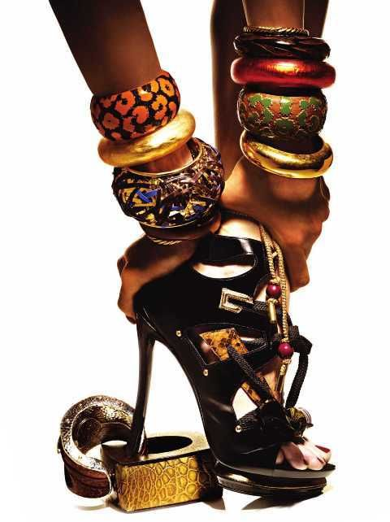
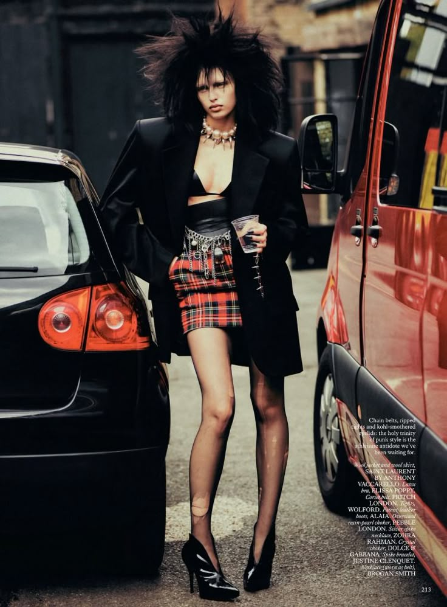
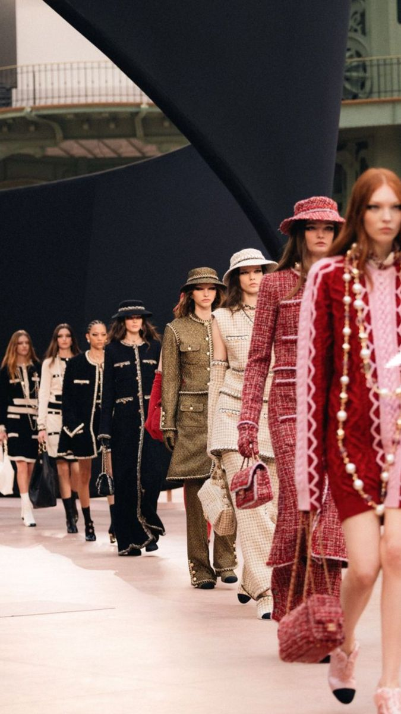
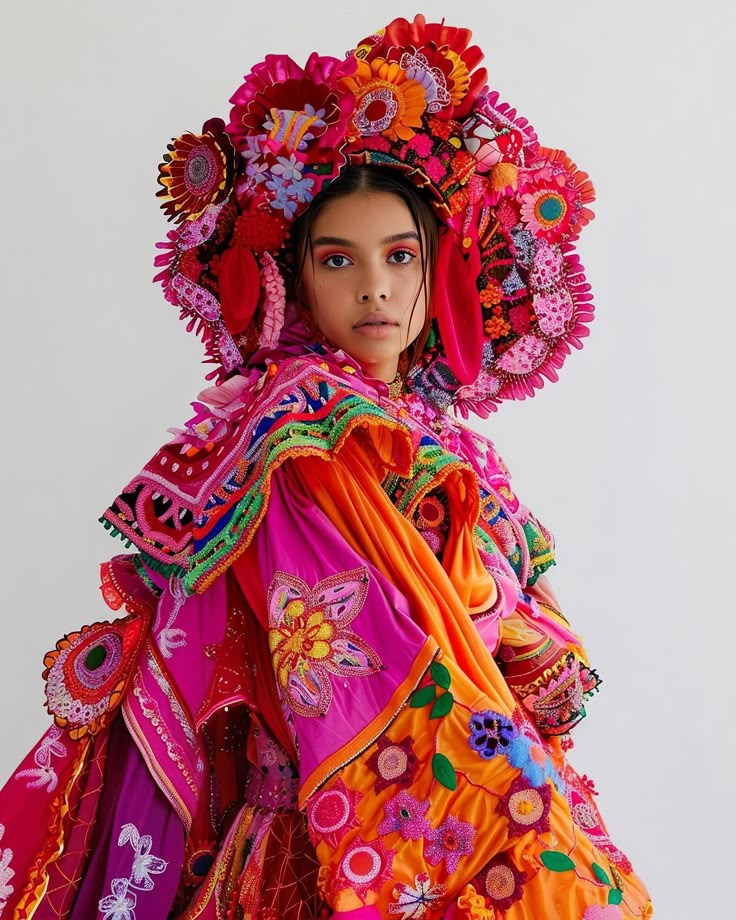
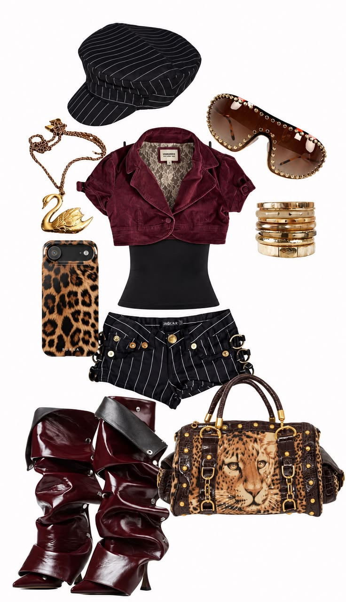

¿Qué comunica la moda?
Personalidad: refleja nuestros gustos y forma de ser.
Identidad: permite mostrar quiénes somos.
Emociones: los colores y prendas pueden transmitir estados de ánimo.
Cultura: representa tradiciones, épocas y grupos sociales.
Creatividad: permite experimentar con combinaciones y estilos.

Accesorios
Los accesorios son elementos que complementan nuestra vestimenta y ayudan a darle personalidad y originalidad a cada conjunto.

Estilos
Existen diferentes estilos de moda que permiten expresar gustos, personalidad e identidad a través de la ropa.

Moda
La moda es una forma de expresión que refleja nuestra creatividad, personalidad y la manera en que vemos el mundo.

Cultura
La moda está influenciada por las tradiciones, costumbres y culturas de diferentes lugares y épocas.

Tendencias
Las tendencias muestran los estilos, colores y prendas que se vuelven populares y marcan cada temporada.

Inspiración de Outfits
Es un espacio para descubrir combinaciones de ropa, experimentar con diferentes prendas y encontrar nuevas ideas para crear looks propios.
Enfoque de la revista
AURA STUDIO se enfoca en la moda como una forma de expresión personal, explorando diferentes estilos, tendencias, accesorios y culturas.
Su propósito es inspirar a las personas a descubrir su identidad, desarrollar su creatividad y expresar su personalidad a través de la vestimenta, demostrando que la moda va más allá de seguir tendencias: es una manera de comunicar quiénes somos.
Contenido
AURA STUDIO ofrecerá contenido relacionado con el mundo de la moda y su papel como medio de expresión personal. Incluirá información sobre accesorios, estilos de vestir, tendencias actuales, influencia cultural, moda sostenible e inspiración de outfits.
También contará con fotografías, collages, consejos y recomendaciones para motivar a los visitantes a experimentar con su estilo y descubrir nuevas formas de expresar su personalidad.
Importancia de la moda
La moda es importante porque permite expresar nuestra personalidad, identidad y creatividad a través de la vestimenta. También refleja la cultura, las costumbres y los cambios de la sociedad a lo largo del tiempo.
Además, nos ayuda a comunicar quiénes somos, transmitir emociones y sentirnos identificados con diferentes estilos, demostrando que la ropa es mucho más que una necesidad: es una forma de expresión.
Diseño de modas
El diseño de modas es el proceso creativo de desarrollar prendas, calzado y accesorios, combinando colores, telas, texturas y formas para crear propuestas originales.
Esta disciplina une el arte, la creatividad y la funcionalidad, tomando inspiración de la cultura, las tendencias y la personalidad de las personas. Su objetivo es crear diseños que comuniquen ideas y expresen diferentes estilos e identidades.